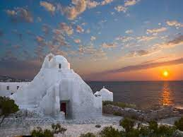
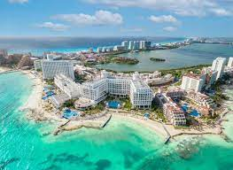
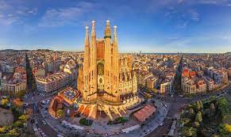

Mykonos
Grécia
Mykonos é uma ilha do arquipélago Cíclades no Mar Ageu. Ela é popularmente conhecida pela sua atmosfera festiva no verão. Praias como Paradise e Super Paradise têm bares tocando música no mais alto volume. Grandes danceterias atraem DJs mundialmente conhecidos, e normalmente ficam abertas até bem tarde. Em mykonos tambem tem passeios turisticos
Cancún
México
Cancún, uma cidade mexicana situada na Península de Iucatã, na costa do Mar do Caribe, é conhecida por suas praias, seus vários resorts e sua vida noturna.
Paris
França
Paris, a capital da França, é uma importante cidade europeia e um centro mundial de arte, moda, gastronomia e cultura. Sua paisagem urbana do século XIX é cortada por avenidas largas e pelo rio Sena. A cidade é conhecida por monumentos como a Torre Eiffel e a Catedral de Notre-Dame, uma construção gótica do século XII, sendo famosa também pela cultura dos cafés e por lojas de estilistas famosos na Rue du Faubourg Saint-Honoré.

Barcelona
Espanha
Barcelona, capital cosmopolita da região da Catalunha na Espanha, é conhecida pela sua arte e arquitetura. A fantástica igreja da Sagrada Família e outros monumentos modernistas projetados por Antoni Gaudí marcam a cidade
